Varuna 360 is a professional astrology chart calculator that bridges Vedic and Western astrology in a single application, powered by Swiss Ephemeris calculations.
Whether you come from Western or Vedic astrology, you will find familiar tools here. Many features exist in both traditions under different names — Varuna 360 uses the Vedic terminology by default, but offers the Western equivalents as well. If a concept is unfamiliar, chances are you already know it under a different name.
The software offers three zodiac modes, selectable from the toolbar buttons. The active mode is highlighted in green:
Aditya Circle (default) — A Tropical Vedic system mapping the 12 Solar Deities (Adityas) to zodiac signs. This is the signature feature of Varuna 360.
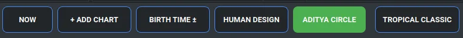
Tropical Classic — Standard Western tropical astrology (Aries, Taurus, Gemini, etc.). If you are a Western astrologer, start here.
Sidereal — Traditional sidereal zodiac with your chosen ayanamsa (Lahiri, KP, Raman…). Uses Western/Sanskrit sign names, which are essentially the same (Aries = Mesha/Ram, Leo = Simha/Lion, etc.). The signs align with the star constellations, but the actual star divisions are the nakshatras, not the signs. Toggle with Alt+S.
Each zodiac mode also has an alternative naming option, accessed by clicking the same button a second time. This gives 6 total combinations:
Aditya Circle with Western names — Uses the Aditya Circle zodiac (the 30 degree shift from Ernst Wilhelm) but displays familiar Western sign names instead of Aditya names. This is probably the most accessible version of the Aditya system: you get the power of the Aditya zodiac without needing to learn 12 new names right away. The Western sign names also carry a rich mythology that most people already know. Many users may prefer this as a starting point before learning the full Aditya names.
Tropical Classic with Aditya names (advanced) — Uses the standard Western tropical zodiac but displays Aditya names. This is an advanced, experimental option. Useful for those who want to test whether the zodiac shift described by Ernst Wilhelm is happening, or simply to explore the Aditya naming on the classical framework. Do not use this unless you understand both systems or your intuition is guiding you there.
Sidereal with Aditya names (advanced) — Sidereal zodiac with the Aditya god names instead of the traditional Western/Sanskrit sign names. This option exists but is not commonly used in India. It is available for those who want to explore the Aditya framework applied to the sidereal zodiac.
See the Zodiac Modes section for more detail on all 6 options.
The default calculation settings follow Ernst Wilhelm's Tropical Vedic approach. If you are familiar with his courses, you will feel right at home. If you prefer standard Western astrology, simply switch to Tropical Classic mode — all classic Western options are fully available. You can switch at any time without losing any data.
The main window is organized as follows:
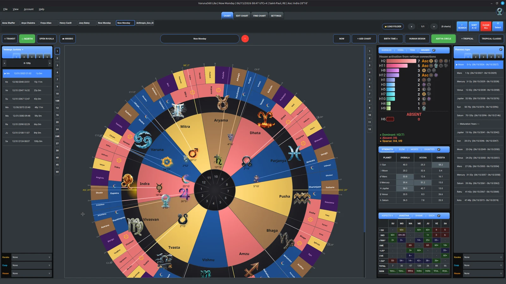
The easiest way to load charts is drag and drop: drag a CHTK file or an entire folder of CHTK files from your file manager directly onto the application window. All charts are loaded instantly.
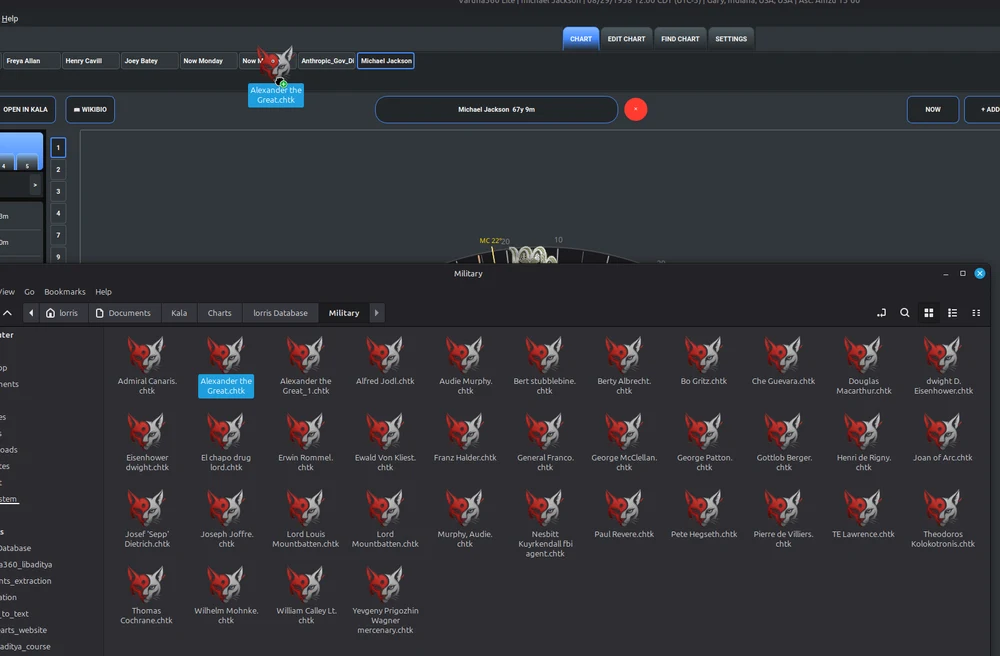
Drag and drop a CHTK file directly onto the app to load it.
CHTK is the chart format used by Kala (Ernst Wilhelm's astrology software). If you have charts from Kala, they work directly. Other chart formats from other software can be integrated upon request.
Other ways to load charts:
There are two ways to create a chart:
Varuna 360 offers three chart visualization styles. Press F2 to cycle through them, or use View > Cycle Chart View.
The most graphically designed view. Features a diamond/square layout with sign icons and a custom stone background that changes with the selected theme (light themes use a light stone, dark themes use a dark stone).
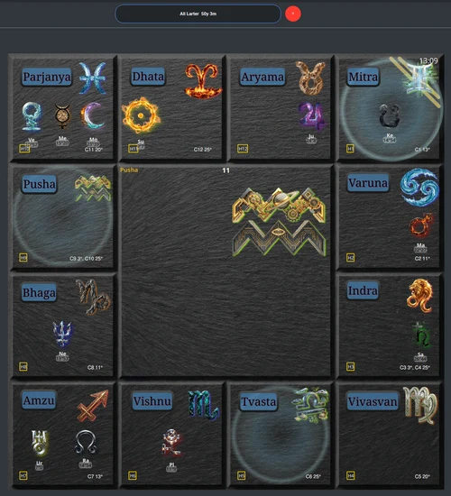
The South Indian chart is a sign-centric format: the signs are always in the same position on the grid, and the houses (numbered from the Ascendant) rotate around them. This makes it excellent for:
Transit Overlay (F3) — When transit mode is active, the center box displays transit planets alongside the natal chart, letting you compare transiting positions directly inside the South Indian layout.
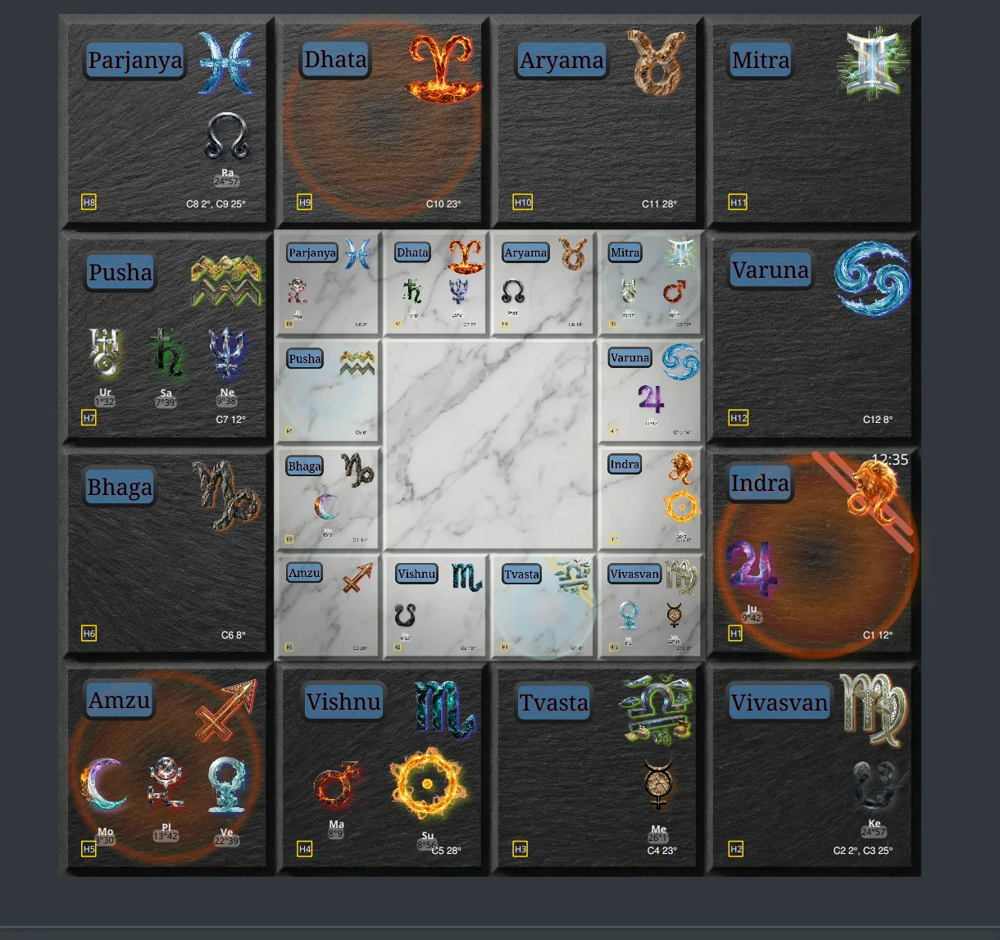
Transit overlay in the South Indian chart. The center box shows the transit chart while the outer boxes display the natal chart.
Interactive features:
The most information-dense and optimized view. A circular zodiac wheel with concentric rings displaying multiple layers of data simultaneously.
+ Tropical / + Aditya)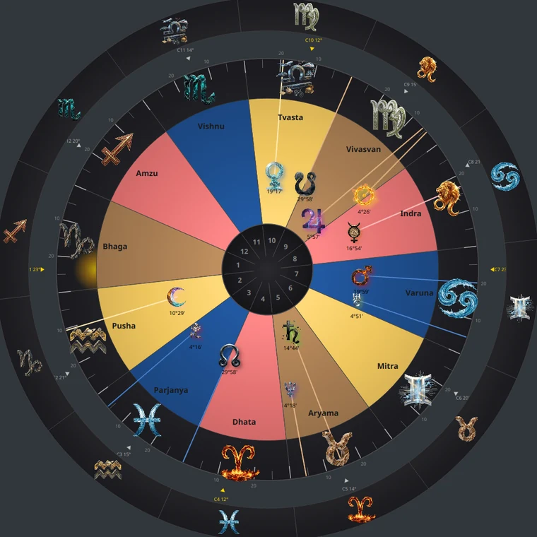
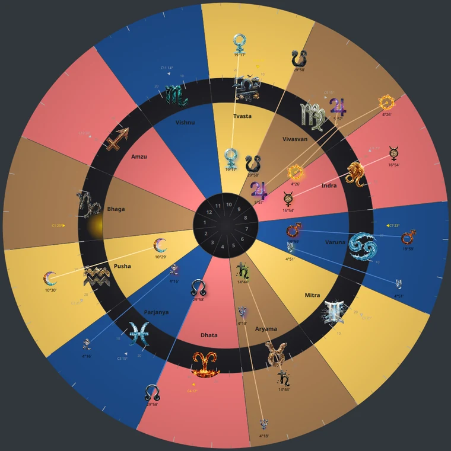
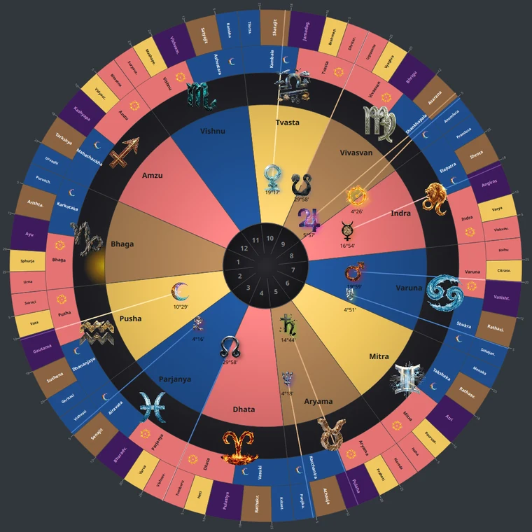
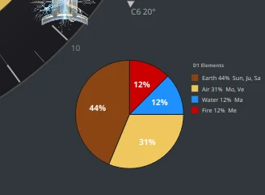
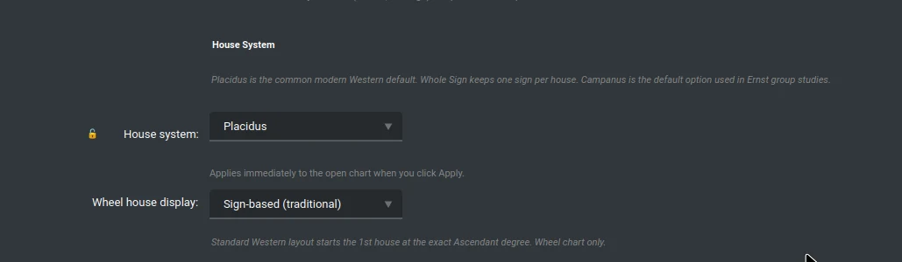
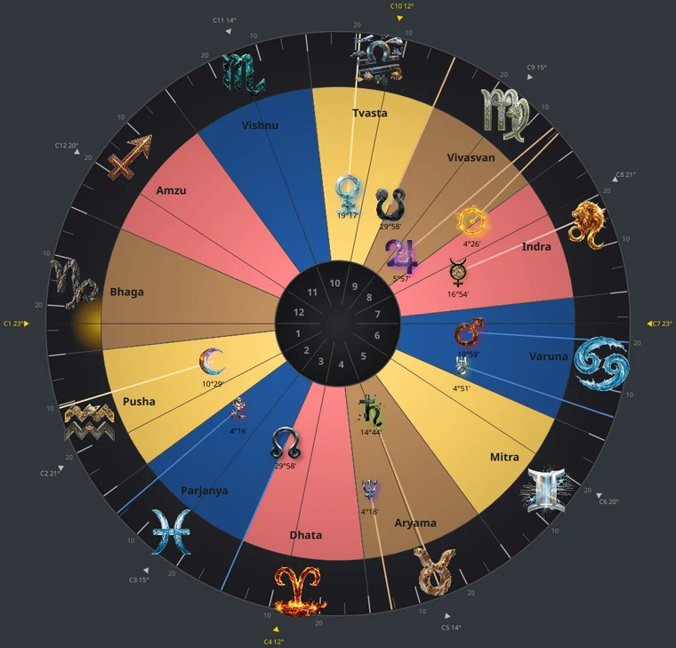
Standard Western house layout: house 1 starts at the exact Ascendant degree (ASC 17), houses are unequal in size. Compare with the sign-based layout where each house is exactly one sign.
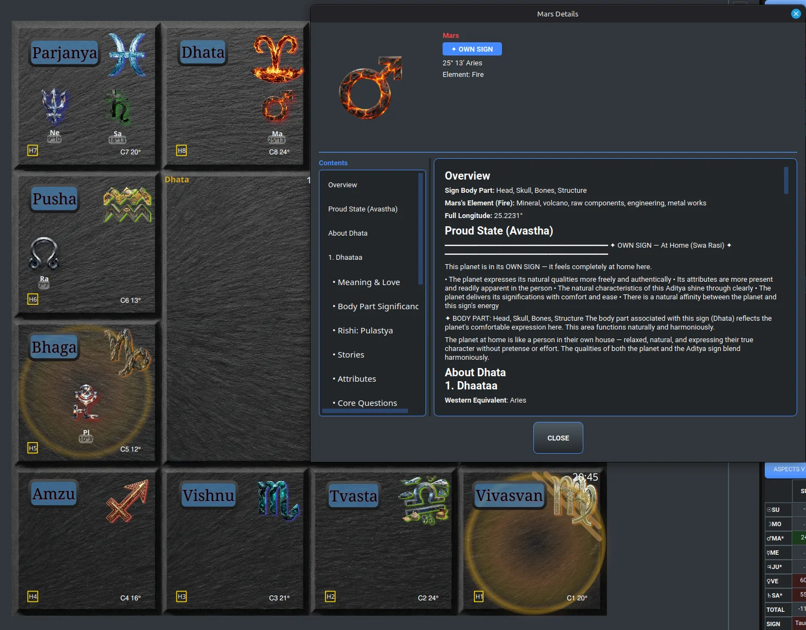
Double-click any planet to open its details. Here Mars in its Own Sign (Dhata/Aries) shows the full Aditya description with a Contents sidebar for navigation.
When Retinue Rings (F5) are enabled, the wheel becomes fully interactive. Three layers of interaction let you explore the chart's retinue structure:
1. Hover over a sector (any colored ring segment): the corresponding house number lights up in the center of the wheel. This shows you which house that sector activates. For example, hovering over a Gandharva sector in Mitra will highlight the houses that Mitra's Gandharva activates. A tooltip shows the being's name and element.
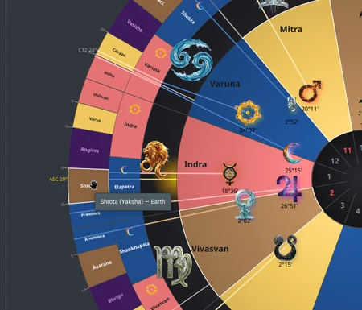
2. Hover over a house number (in the center): all sectors connected to that house light up on the wheel. This is the reverse view, showing you every being across every sign that activates this house. Useful for seeing which retinue beings are channeling energy into a specific life area.
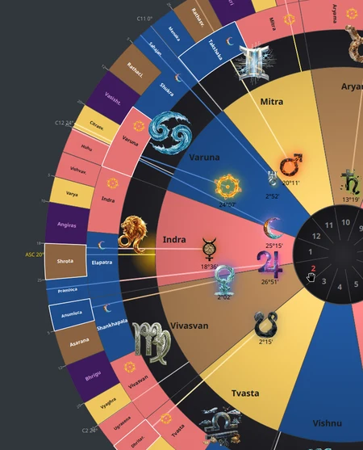
3. Click any sector to open the Sector Info Dialog. This popup gives you the full structural breakdown for that sign's retinue:
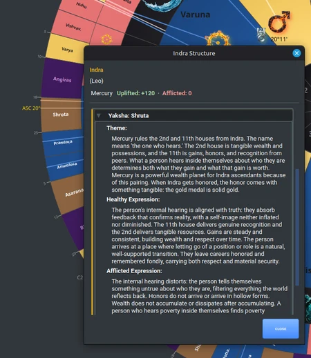
A square chart with horizontal and vertical lines showing all planets including outer planets (Uranus, Neptune, Pluto) when enabled with F8, plus Rahu and Ketu.
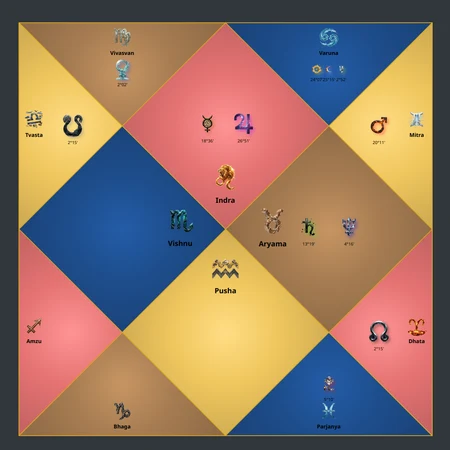
The North Indian chart is a house-centric format: the houses are always in the same position (1st house at top, 7th at bottom), and the signs rotate around them. This makes it excellent for:
Transit Overlay (F3) — When transit mode is active, a smaller diamond chart appears overlaid on the natal chart, showing the transiting planets in each house. The transit overlay uses the same element-colored houses and sign icons as the natal chart, making it easy to compare natal and transit positions at a glance.
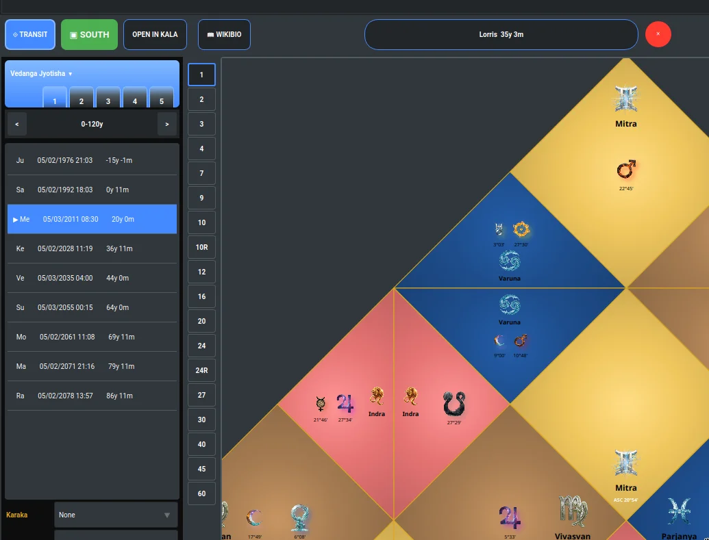
Transit overlay on the North Indian chart. The smaller inner diamond shows transit planets while the outer diamond displays the natal chart. The dasha panel on the left shows the active dasha period.
To the right of the chart area, you will see a column of 12 numbered buttons labeled 1 through 12. These numbers represent the 12 signs of the zodiac, not house numbers.
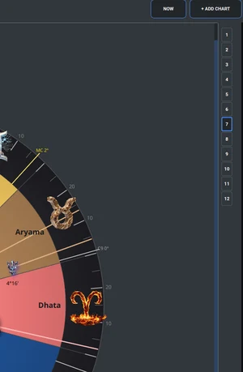
In Vedic astrology, signs are traditionally referred to by number (1 = Aries/Dhata, 2 = Taurus/Aryama, etc.). This is the convention used here. Hover over any button to see the full sign name in the tooltip.
Clicking a number recalculates the chart from that sign's perspective as Ascendant. This is based on Ernst Wilhelm's structure course: by viewing the chart from each of the 12 sign positions, you can analyze how each Aditya's theme manifests in the person's life. For example, clicking "7" shows the chart with Tvasta as the 1st house, revealing the house structure from Tvasta's perspective.
Click the same button again to deselect it and return to the natal Ascendant. Only one sign can be selected at a time.
South Indian chart: When you select a sign, the center of the chart transforms into a mini North Indian chart showing the chart from the selected sign's perspective. The outer grid stays fixed (signs never move in South Indian). This gives you a quick house overview from any sign without leaving the South Indian view.
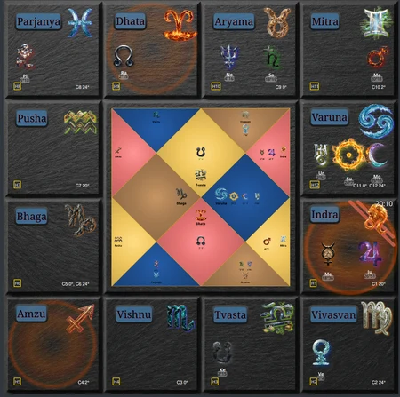
South Indian with sign 7 selected: Tvasta is the 1st house in the center mini chart. Notice the Ascendant cusp (H1) is in Indra but the 1st house is Tvasta, which would be impossible in a normal chart. This is a deliberate analytical view, not an error.
Wheel and North Indian charts: The entire chart redraws with the selected sign as Ascendant. The house numbers rotate so the selected sign becomes house 1.
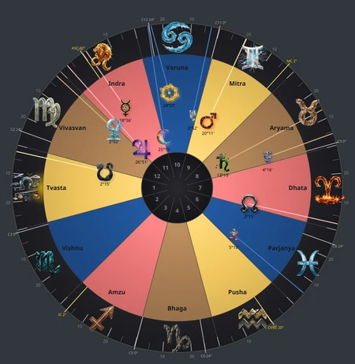
Wheel with sign 7 selected: the entire chart redraws from Tvasta's perspective.
The right side of the window contains three stacked panel groups. Each group has multiple sub-tabs — click the header buttons to switch between them.
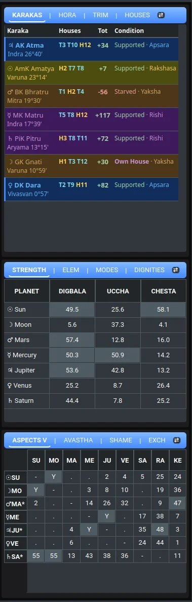
The three info panels with Karakas in enriched mode, Strength, and Aspects.
All three panels share the same interaction pattern:
Many of these concepts exist in both Vedic and Western astrology under different names. The table below maps the key terms:
| Vedic Term | Western Equivalent |
|---|---|
| Karakas (significators) | No direct equivalent — unique to Vedic system |
| Digbala (directional strength) | Angular strength — Hellenistic "busy places"; later "accidental dignity" |
| Uccha Bala (exaltation strength) | Essential dignity (exaltation/fall/domicile/detriment) |
| Chesta Bala (confidence) | No direct equivalent — synodic cycle strength (star planets), solstice/phase (luminaries) |
| Elements (Fire/Earth/Air/Water) | Same — identical concept in both systems |
| Modality (Moveable/Fixed/Dual) | Same — Cardinal/Fixed/Mutable |
| Vedic aspects (graha drishti) | Aspects with special planetary rules |
| Tajika aspects | Nearly identical to Western aspects (orb-based) |
| Avastha (planetary states) | No direct equivalent — age/vitality of planets |
| Avastha / Shame (Lajjitaadi) | No equivalent — uniquely Vedic concept (not the same as combustion or debilitation) |
The Karakas panel has four tabs: Karakas, Hora, Trim, Houses. Two of these tabs have enriched views accessible via the swap icon.
Karakas (Chara Karakas) — A concept unique to Vedic astrology with no direct Western equivalent. The 7 visible planets are sorted by degree within their sign, and each is assigned a significator role based on that ranking:
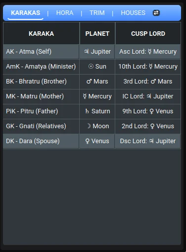
Each row also shows the cusp lord for the associated house. The cusp lord is determined by the actual house cusp degree (using your selected house system, e.g. Placidus or Campanus), which can differ from the whole sign lord when the cusp falls in a different sign. Ernst Wilhelm recommends using both perspectives. The AK and DK rows are highlighted as the most significant.
Karakas enriched view (swap icon) — When you click the swap icon, the Karakas tab shows an enriched version with each karaka's sign, house connections, avastha total (uplifted or afflicted), and dominant condition (Exalted, Shamed, Supported, Starved, etc.). Rows are colored by trimsamsa being type.
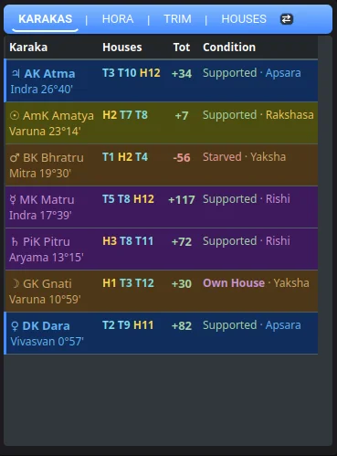
Hora — The Hora divides each sign into two halves — like two sides of a mountain. Each side represents a fundamentally different way the sign's love is expressed:
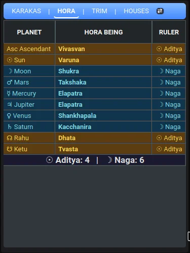
| Sun Hora (Aditya side) | Moon Hora (Naga side) | |
|---|---|---|
| Degrees | 0°-15° in odd signs, 15°-30° in even | 15°-30° in odd signs, 0°-15° in even |
| Action | Fire up your engines — actively express the Aditya's love | Take the brakes off — release unconscious blocks preventing love |
| When healthy | Powerful, truthful, purposeful expression | Natural flow of love once blocks are released |
| When afflicted | Aggressive, selfish, pushy — force twisted into ego | Sad, wounded, stuck — something is missing, can't feel love |
| What to work on | Express the Aditya purely, untwist selfishness | Let go of unconscious conditioning (the Naga work) |
The same affliction in the same sign produces completely different manifestations depending on which hora the planet is in. This is one of the most practical insights from Ernst Wilhelm's system.
Trimsamsa — Each sign is divided into 5 unequal segments ruled by Mars, Saturn, Jupiter, Mercury, and Venus. In the Aditya system, each segment activates a specific being from the Aditya's retinue:
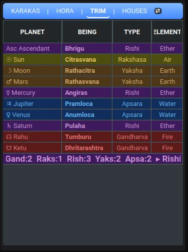
| Ruler | Being | Element | Hora | Role |
|---|---|---|---|---|
| Mars | Gandharva | Fire | Sun | The warrior-inspirer — fires up the Aditya force with strength and purpose |
| Saturn | Rakshasa | Air | Sun | The destroyer of threats — permanently eliminates what blocks love |
| Jupiter | Rishi | Ether | Both | The only being spanning both horas — brings truth and wisdom to both sides |
| Mercury | Yaksha | Earth | Moon | The keeper of wealth — changes environment to retrain the unconscious |
| Venus | Apsara | Water | Moon | The mood-shifter — dissolves conditioning through emotional alchemy |
Houses — The default view shows a House Activation bar graph, a visual summary of which houses are most activated by the chart's retinue beings. Taller bars mean more retinue beings channel energy into that house.
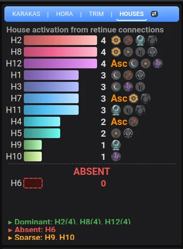
Planetary Condition (swap icon) — When you click the swap icon on the Houses tab, you get a compact Planetary Condition table showing each planet's sign, house connections, avastha total (colored green for positive, red for negative), and lajjitaadi condition states. Rows are colored by trimsamsa being type. This is a condensed version of the full Planetary Condition page available in the fullscreen zoom.
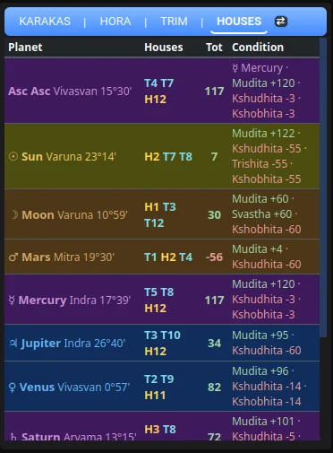
Double-click anywhere on the Karakas panel to open a 6-page fullscreen view. Navigate between pages using the arrow buttons or clickable tab chips at the top. Each page shows an expanded version of the panel data with more columns and detail. A Copy All as JSON button at the bottom right copies the entire page content for use with AI tools.
At the bottom of every zoom page, a Five Being Types reference strip shows all five retinue beings (Gandharva, Rakshasa, Rishi, Yaksha, Apsara) with their ruler, element, hora side, and role. This serves as a quick legend while reading the data above.
Page 1: Karakas — The basic karaka ranking table at full screen size. Three wide columns (Karaka, Planet, Cusp Lord) with each row colored by its trimsamsa being type. The AK and DK rows are highlighted as the most significant.
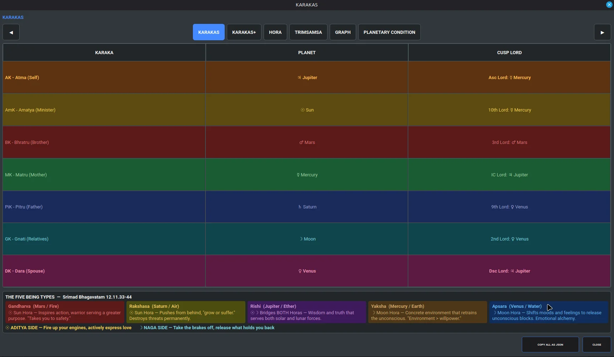
Page 2: Karakas+ — The enriched karaka view with the full avastha
interaction matrix. Each row shows the karaka name, its retinue being type, and then
7 columns (Su, Mo, Ma, Me, Ju, Ve, Sa) showing how much each planet helps or harms
this karaka. Values are color-coded: green with + for positive (uplifting)
interactions, red with ~ for negative (afflicting) ones. Special markers
like OH (Own House) appear when a planet is in its own sign.
The Tot column sums all interactions, and the Condition column lists
the specific lajjitaadi avasthas (Mudita, Kshobhita, Kshudhita, Trishita, Svastha)
with their virupa values.
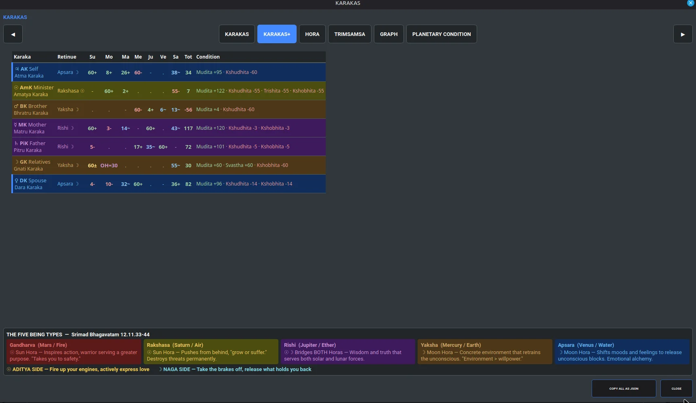
Page 3: Hora — Extended hora table with additional columns.
Page 4: Trimsamsa — Extended trimsamsa table with additional columns.
Page 5: Graph — The house activation bar graph at full size.
Page 6: Planetary Condition — The most data-rich page. Shows every planet (including Ascendant, Rahu, and Ketu) with its sign and degree, Hora and Trimsamsa house connections, retinue being name, the full 7-column avastha interaction matrix, total, and condition summary. For Rahu and Ketu (which have no sign of their own), the Lord of the sign they occupy is shown instead. Retinue being names are clickable: clicking one opens a popup showing the uplifted and afflicted expression totals for that sector.
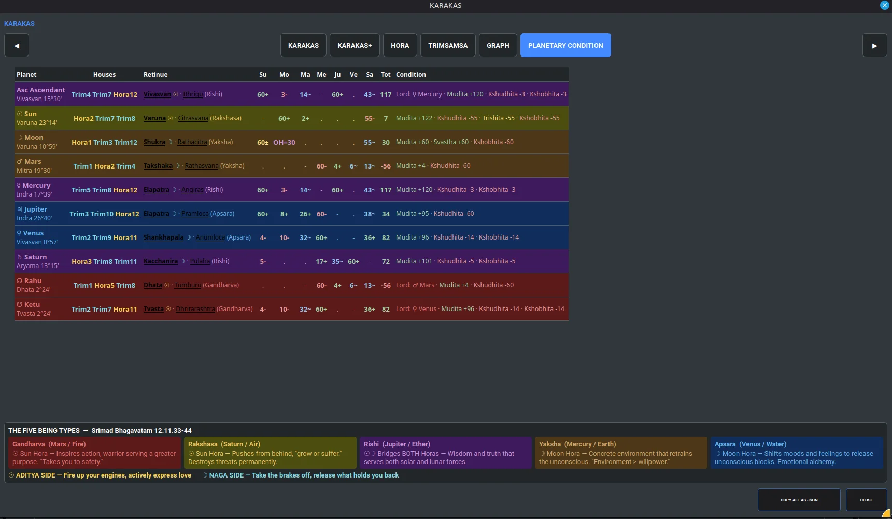
Strength — Displays three planetary strength measurements for each of the 7 planets. The column headers can be toggled between Sanskrit terms and plain English by clicking the swap icon on the Strength panel header. Western astrologers will recognize these concepts under their dignity system:
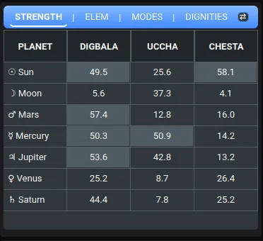
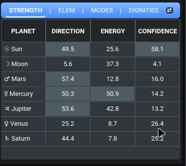
Left: Sanskrit terms (default). Right: English terms (after clicking the swap icon).
| Vedic Name | English Name | What It Measures | Western Parallel |
|---|---|---|---|
| Digbala | Direction | Strength from house position — each planet has a "best house" where it gains maximum directional strength | Angular strength (Hellenistic: planets in angular places are strongest). Later called "accidental dignity" in Medieval astrology — "accidental" here means "circumstantial", not "by chance" |
| Uccha Bala | Energy | Strength from sign position — how close the planet is to its exaltation degree | Essential dignity — exaltation, domicile, detriment, fall |
| Chesta Bala | Confidence | A composite strength that varies by planet type. For the 5 star planets (Mars, Mercury, Jupiter, Venus, Saturn) it is based on their synodic cycle and apparent motion — this is closely related to retrograde status (see note below). The Sun uses Ayana Bala (solstice strength) and the Moon uses Paksha Bala (lunar phase strength) | No direct Western equivalent — partially relates to Hellenistic concepts of planetary speed and sect |
R* 52.3) as a quick visual indicator. The Sun and Moon are never
retrograde, so they never show this marker — their Chesta values come from entirely
different calculations (Ayana Bala and Paksha Bala respectively).
Elements — The distribution of planets across Fire, Earth, Air, and Water. This is identical in both Vedic and Western astrology — same four elements, same sign assignments. Shown as percentages with the list of planets in each element. The dominant element is marked with a star.
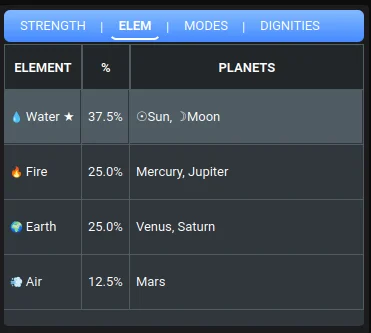
Modality — The distribution across the three modalities. Same concept in both traditions, just different names:
| Vedic Term | Western Term | Signs |
|---|---|---|
| Moveable (Chara) | Cardinal | Aries, Cancer, Libra, Capricorn |
| Fixed (Sthira) | Fixed | Taurus, Leo, Scorpio, Aquarius |
| Dual (Dwiswabhava) | Mutable | Gemini, Virgo, Sagittarius, Pisces |
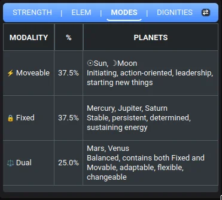
Click the swap icon on the Modality tab to toggle between the standard modality view and the Rajju, Musala, and Nala yoga calculation modes. These are traditional groupings of signs that reveal different structural patterns:
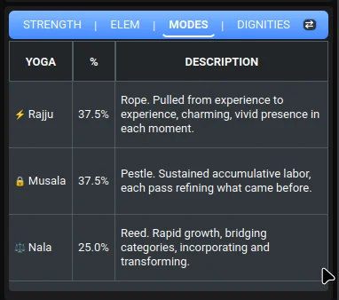
Click on any yoga name to open a detailed description popup explaining the yoga's meaning, how it manifests with healthy avasthas, and how it manifests with unhealthy ones.
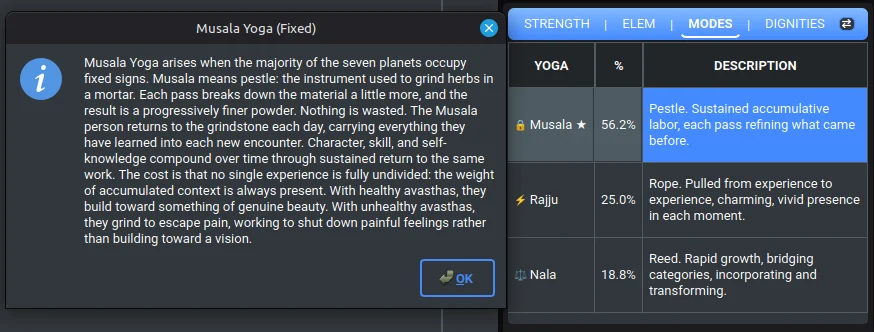
Dignities — Shows the dignity status of each planet across multiple divisional charts (vargas). The table displays whether each planet is in its own sign, exalted, debilitated, in a friendly sign, or in an enemy sign, checked across the main chart (D1) and key vargas.
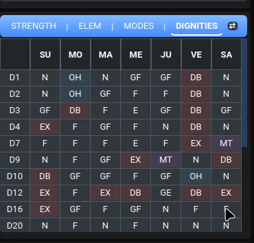
Click the swap icon on the Dignities tab to cycle between three varga calculation styles:
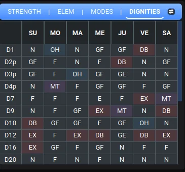
Parivritti mode: varga rows labeled D2p, D3p, D4p to distinguish from Classical.
Double-click the Strength panel to open a 4-panel fullscreen view showing all four tabs side by side: Strength, Elements, Modality, and Dignities in Vargas.
The fullscreen view shows all data at once without needing to switch tabs. The Dignities panel expands to show all vargas from D1 to D60 (the compact panel only shows D1 through D20). A color-coded legend at the bottom explains each dignity abbreviation: EX (Exalted), MT (Moolatrikona), OH (Own House), GF (Great Friend), F (Friend), N (Neutral), E (Enemy), GE (Great Enemy), DB (Debilitated).
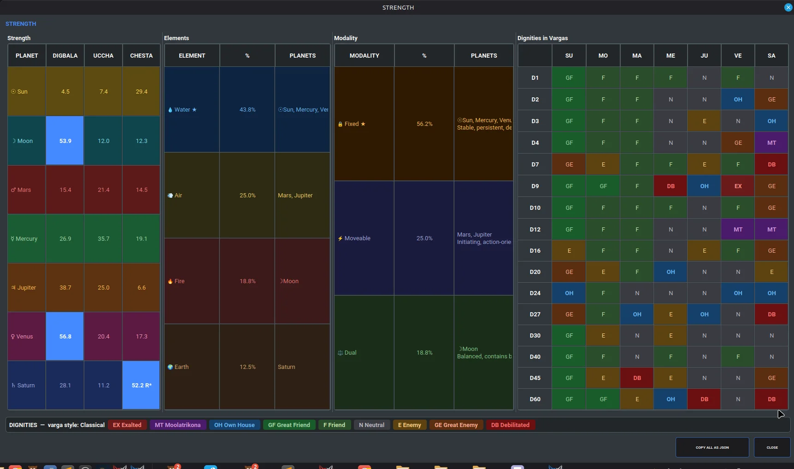
This panel has four tabs in Vedic mode (Aspects V, Avastha, Shame, Exch) and three tabs in Tajika mode (Aspects T, Relations, Yogas). To switch between Vedic and Tajika, click the swap icon at the right end of the Aspects header bar.
Aspects V (Vedic) — Vedic-style aspects (graha drishti). A 9×7 grid showing aspect relationships between all grahas. Vedic aspects differ from Western aspects: all planets aspect the 7th house (opposition), plus special aspects — Mars aspects the 4th and 8th, Jupiter the 5th and 9th, Saturn the 3rd and 10th. These are full-strength aspects with no orbs.
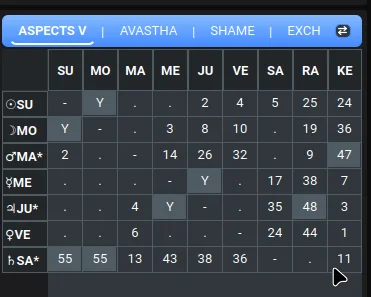
Aspects T (Tajika) — This system is nearly identical to Western aspects. If you are a Western astrologer, this is the aspect panel you will want to use. It shows conjunction, opposition, trine, square, and sextile with precise orb calculations, just like in Western astrology. The Tajika system was historically transmitted between the Hellenistic, Arabic, and Indian traditions — it is essentially the same aspect system Western astrologers use today.
Tajika mode has three tabs:
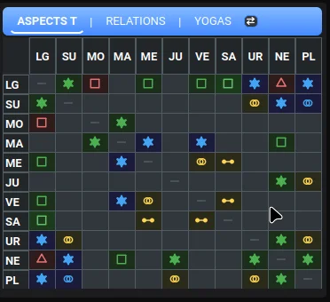
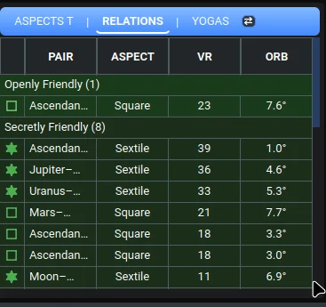
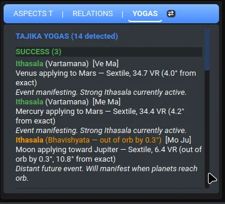
Avastha — The Avastha panel shows the Lajjitaadi Avastha calculations for
the current chart. Each cell shows how much one planet helps (+) or harms
(~) another, with the total and the sign's avastha state in the bottom rows.
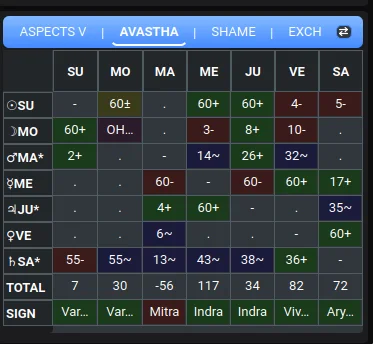
Shame (Lajjita Avastha) — Shows which planets are in a state of shame. The panel lists each shamed planet with its sign, house, the source of shame, and a summary count at the bottom. Shame occurs in two specific situations:
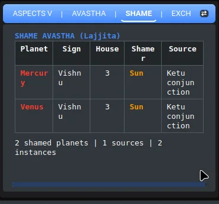
For example, Mars and Moon in the 5th house causes the Moon to feel shame — practically meaning a deep wound connected to the inner feminine child (Moon period, age 0-1).
There are also avasthas of pride, which occur when a planet is in its sign of exaltation — the opposite of shame, giving inner confidence.
Exchange Yogas (Parivartana) — Shows exchange yogas between planets. An exchange occurs when two planets are in each other's signs (e.g., Mars in Cancer and Moon in Aries). Click the yoga name for a full explanation. Three types are detected:
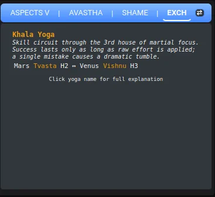
Each exchange is shown with a description of its effects and the houses involved. Click the yoga name for a detailed popup explaining the yoga's full meaning, how the 3rd house "exam" works, and how it manifests with healthy or unhealthy avasthas. The fullscreen zoom (double-click) provides expanded descriptions.
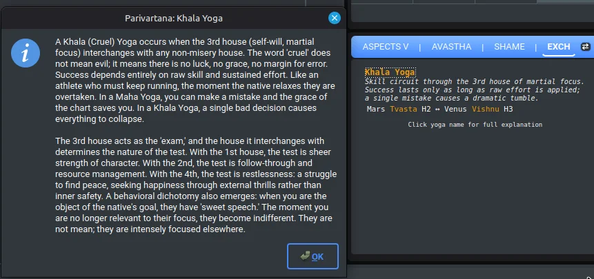
Double-click the Aspects panel to open a 7-page fullscreen view with paged navigation. The zoom version shows all data at full screen width.
Page 1: Aspects — The Vedic aspect grid at full size with color-coded cells.
Values are virupas (max 60). Y means Yuti (same sign conjunction). The legend
at the bottom explains: values 45+ are strong, 30+ are moderate.
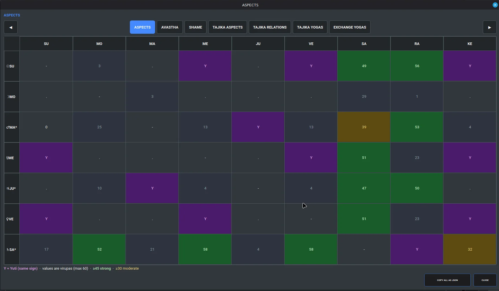
Page 2: Avastha — Full avastha matrix at full width.
Page 3: Shame — Expanded shame panel with full descriptions.
Page 4: Tajika Aspects — The Tajika matrix at full size with all planets including outer planets (Uranus, Neptune, Pluto) and the Ascendant (LG). Color-coded symbols show aspect types: green stars (trine/sextile), red squares/triangles (square/opposition), yellow circles (conjunction).
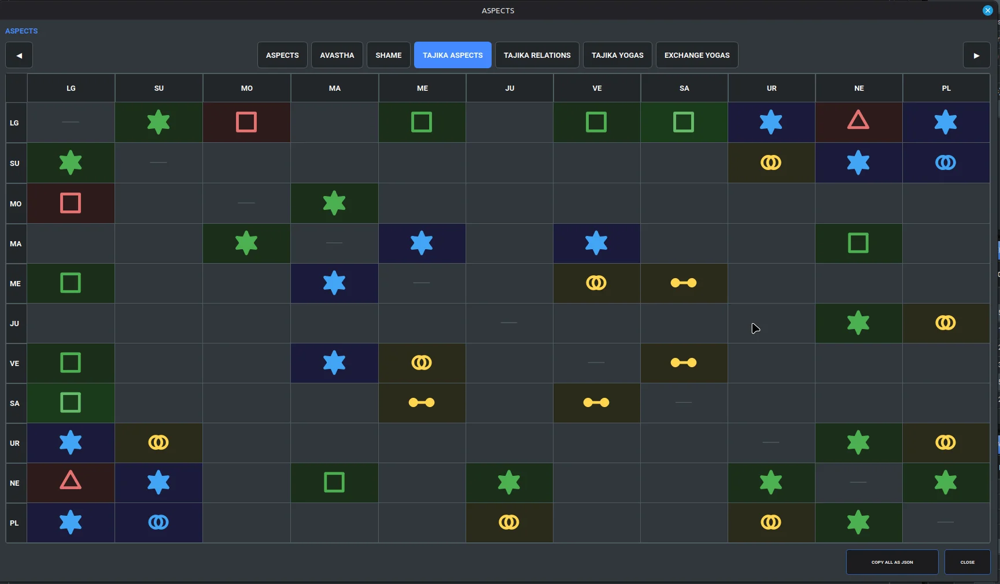
Page 5: Tajika Relations — Full list of every aspect pair, grouped by relationship quality (Openly Friendly, Secretly Friendly, Neutral, Secretly Inimical, Openly Inimical). Each row shows the pair, aspect type, Virupas Rating (VR), and exact orb. Sorted by strength within each group.
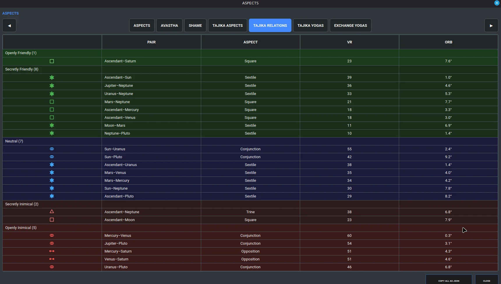
Page 6: Tajika Yogas — Full Tajika yoga analysis at screen width.
Page 7: Exchange Yogas — Expanded exchange yoga descriptions.
Dashas are planetary timing systems — they tell you which planet is "ruling" a given period of your life. Western astrology has similar concepts in planetary periods (Firdaria) and annual profections, but the Vedic dasha systems are far more detailed and precise, with nested sub-periods down to minutes.
The left side of the window contains two dasha panels side by side:
Each dasha panel can use a different ayanamsa, letting you compare two ayanamsa systems side by side on the same chart. Both panels have the same Karaka/Cusp/House highlight filters at the bottom.
The primary timing system used in Vedic astrology, and one of its most powerful tools. It divides life into planetary periods based on the Moon's nakshatra (lunar mansion) at birth. Varuna 360 supports 5 nested levels:
Click any period to expand and see its sub-periods. Each entry shows the planet, the exact start date, and the age at that time. The currently active period is marked with ▶. The numbered buttons (1-5) at the top select the dasha level depth.
Left: Level 1 (mahadashas). Right: Level 2 (antardasha sub-periods within Rahu).
120-Year Cycles: Use the < / >
buttons to navigate through 120-year cycle windows.
The ayanamsa is the offset angle between the tropical and sidereal zodiacs, caused by the precession of the equinoxes. Western astrologers may not be familiar with this concept since it only matters when calculating sidereal-based features like nakshatras and dashas. The ayanamsa determines which nakshatra the Moon falls in, which in turn determines the starting point of the Vimshottari dasha sequence.
There are two ways to change the ayanamsa:
Over 50 ayanamsa systems are available, organized by category:
A natural timing system based on planetary maturation ages. Press F7 to switch the right dasha panel between Vimshottari and Planetary Ages mode.
The panel shows two sections in a single view:
At the bottom of each dasha panel, three dropdown filters let you highlight specific periods in the dasha list:
This is a powerful tool for timing events. Instead of manually scanning through dasha periods trying to find when a specific planet is active, you select the relevant karaka or house lord and the matching periods light up instantly. For example, to find when career themes are strongest, select "10th" in the Cusp filter and all periods ruled by the 10th house lord are highlighted.
Left: Planetary Ages with AK + 10th cusp highlighted. Right: Vimshottari with the same filters.
The left dasha panel defaults to Vedanga Jyotisha ayanamsa, which is the current default for the Aditya Zodiac system. This is still an active area of research — it replaced the previous default setting (Dhruva GC mid-Mula) as we continue testing which ayanamsa produces the most accurate dasha timing for the Tropical Vedic approach. You can change the left panel's ayanamsa independently from the right panel via the title bar dropdown or in Settings. Both panels support the same 5-level dasha expansion and Karaka/Cusp/House highlight filters.
The chart memory system works like browser tab profiles (similar to Chrome profiles). Each profile maintains its own collection of loaded charts, session state, and preferences. All charts are automatically saved when you close the application and restored on restart. You never need to manually save your chart collection.
The memory panel sits at the top of the chart area. It displays your loaded charts as clickable buttons arranged in 2 rows × 20 columns (40 charts per page).
There are several ways to load charts into the memory panel:
If you have never used CHTK files before, you can also save charts you create in Varuna 360 as CHTK files (Ctrl+Shift+S) and reload them later or share them with other users.
Right-click any chart button in the memory panel for a context menu:
Profiles let you organize charts into separate collections. Each profile has its own charts, session state, and avatar. This is useful for separating work by context (e.g., clients, research, family, students).
The profile avatar is the round button at the top-right corner of the window. Click it to open the profile menu.
There is no limit on the number of profiles you can create. Each profile stores its charts independently. Within each profile, you can have multiple pages of charts (40 per page), so a single profile can hold hundreds of charts.
The Edit Chart tab (Ctrl+E) has three sub-tabs accessible from the left sidebar: Edit Info, New Chart, and Map View.
A form-based editor for the currently loaded chart. The form is split into sections:
Top section: Full Name, Date (MM/DD/YYYY), Time Format (Local Time or UTC Time), Local Time (HH:MM:SS), and Gender (Male/Female).
Bottom section: Birth Location (city search with auto-completion), Coordinates (Latitude/Longitude, editable directly or via the USE MAP button), Timezone (IANA name with numeric offset, e.g. +04:00), and Daylight Saving Time (No / Yes / War Time).
Click SEARCH OR PICK ON MAP to switch to the Map View and select the location visually. Click SAVE CHANGES when done, or CANCEL to discard.
Create a brand new chart from scratch. Uses the same form as Edit Info but starts with empty fields. Fill in the birth data and submit to calculate the chart and add it to memory. The Add Chart button (Alt+A) in the toolbar is often faster for quick entry since it accepts copy-pasted text.
An interactive offline map for selecting birth locations. Type a city, country, or address in the search bar at the top and click SEARCH. You can also click directly on the map to place a location pin. The selected coordinates are shown and the timezone is automatically determined.
Map View: search for a city or click on the map. Click APPLY & RETURN TO EDIT INFO to use the selected coordinates.
Click APPLY & RETURN TO EDIT INFO at the bottom right to apply the selected location and go back to the Edit Info form with the coordinates pre-filled.
Toggle with Alt+H or the Human Design button in the toolbar.
This feature calculates the astrological chart at 88° before the natal Sun position, as described by the creator of Human Design. It produces the "Design" or "unconscious" chart that shows pre-birth planetary influences.
When Human Design mode is active, the Human Design button turns green. The mode automatically deactivates when you load a new chart, reload the current chart, or load a "Now" chart.
The main toolbar sits between the chart memory panel and the chart display. Here is each button from left to right:
Wheel / South / North (F2) — Shows the current chart view style. Click to cycle between Wheel, South Indian, and North Indian views.
Open in Kala (Alt+K) — Opens the current chart in Kala software (Ernst Wilhelm's astrology program). Requires Kala to be installed and configured in Settings.
WikiBio — Opens a biography search for the current person. This searches biographical databases and works best with known celebrities or public figures. If the person is not publicly known, it will not return useful results.
Chart name pill — The rounded blue bar showing the person's name and current age (e.g., "Ali Larter 50y 3m"). Right-click this pill to open a research menu with multiple search and dasha timing options:
Astrology searches:
Biography searches:
Dasha Event Search — The right-click menu includes dynamic submenus based on the current dasha system selected in the left panel. The label reflects your current ayanamsa setting (e.g., Dhruva GC mid-Mula, Lahiri, Vedanga Jyotisha). Click a dasha period in the left panel first to select it (it highlights in blue). The highlighted period is the one used for the search.
Two search methods are available for each antardasha sub-period:
| Submenu | What it does |
|---|---|
| [Ayanamsa] — Google Search | Opens Google with the person's name and a date range filter matching the sub-period. Google only returns results published or dated within that period — great for finding news articles, interviews, and events. |
| [Ayanamsa] — Copy AI Prompt | Copies a natural-language prompt to your clipboard, ready to paste into any AI assistant (Claude, ChatGPT, Gemini, Perplexity, etc.). The prompt asks: “What significant events happened to [Name] between [Month Year] and [Month Year]?” |
Each entry shows the antardasha sub-period (e.g., “Ra/Ju (01/18/2004 - 03/22/2006)”). The currently active sub-period is marked with ▸.
Jupiter mahadasha selected in the dasha panel (blue highlight). The right-click submenu shows each antardasha sub-period with date ranges.
Clicking a different dasha (Mars) changes which sub-periods appear in the search menu.
The Google Search option automatically sets a Custom date range matching the dasha period. This is not immediately visible in Google's results page: you need to click Tools and hover over the date filter to see "Custom range..." with a checkmark, confirming the search is already filtered to that period.
Google Tools showing the custom date range automatically set by the dasha search.
Why antardasha? Antardasha sub-periods (the second level of the Vimshottari system) typically last 1-3 years — long enough to correlate with life events, but specific enough to pinpoint timing. Mahadasha periods (14-20 years) are too broad for event research.
Planetary Ages & Maturation — When the right panel is in Nisarga mode (F7), the right-click menu adds four submenus:
| Submenu | What it shows |
|---|---|
| Planetary Ages — Google Search | Each planet rules a period of life (e.g., Moon 0-4y, Mars 4-14y, Mercury 14-24y). Searches Google with a date range matching that period. |
| Planetary Ages — Copy AI Prompt | Copies a clipboard prompt for the selected planetary age period. |
| Maturation Ages — Google Search | Each planet matures at a specific age (e.g., Jupiter at 16y, Sun at 22y, Moon at 24y). These are milestone years where the planet's themes crystallize. Searches Google for events during the maturation window. |
| Maturation Ages — Copy AI Prompt | Copies a clipboard prompt for the selected maturation period. |
Maturation entries are marked with ★ in the menu. The currently active period is marked with ▸.
Transit from Dasha — The dasha right-click menu also includes two transit actions that use the start date of the selected dasha period:
Right-click a dasha period to open the context menu. "Show as transit overlay" activates the transit overlay set to that dasha's start date, visible in all three chart views.
Close button (red X) — Removes the current chart from memory.
NOW (Alt+N) — Creates a transit chart for the current moment at your location. Useful for quick transit checks: what planets are active right now? You can combine this with the Birth Time button to move forward or backward in time. Press F3 to toggle the transit overlay, which shows transit planets directly on the natal chart in all three views (Wheel rim, South Indian center box, North Indian inner diamond).
+ Add Chart (Alt+A) — Quick chart entry dialog. This is the fastest way to create a chart: just copy and paste the birth information (name, date, time, location) as a single line of text, and the built-in parser will automatically extract and separate the fields. Much faster than filling out the full Edit Chart form. Always verify that the parsed information is correct before generating the chart, as the parser does not always get it right (especially with unusual date formats or uncommon city names).
Birth Time (Alt+T) — Opens a time adjustment widget that lets you shift the birth time by seconds, minutes, or hours. Useful for birth time rectification (testing slightly different times to see how the chart changes), or for moving through time on a transit chart created with the NOW button.
Human Design (Alt+H) — Toggles Human Design mode. When active (green), the chart shows the "Design" chart calculated at 88 degrees before the natal Sun. See the Human Design section for details. This is an experimental feature.
Aditya Circle / Tropical Classic — Zodiac mode buttons. See the Zodiac Modes section for all 6 options.
| Button | Shortcut | Description |
|---|---|---|
| Transit Overlay | F3 | Toggle transit overlay on current chart view (all three views) |
| Retinue Rings | F5 | Toggle colored house rings showing planetary retinues |
| Pie Charts | Shift+F5 | Toggle element and modality pie charts on the wheel |
| Outer Planets | F8 | Toggle visibility of Uranus, Neptune, and Pluto |
| Cusp Lines | F9 | Cycle cusp line glow: Off → Soft → Bright |
| Ascendant Cycle | F4 | Cycle through 12 signs as ascendant (planets stay fixed, houses rotate) |
Vargas are divisional charts — they divide each sign into smaller segments to zoom into specific life areas. Western astrology uses a similar concept with harmonic charts (the D9/Navamsa is equivalent to the 9th harmonic). If you are a Western astrologer, think of vargas as harmonics with specific traditional meanings attached.
Access via View > Varga Charts in the menu, or use the varga sidebar on the left edge of the chart area. The sidebar shows numbered buttons for quick switching between divisional charts.
The varga sidebar: click any button to switch divisional chart. D1 (Rasi) is the main chart.
| Varga | Name | Signification |
|---|---|---|
| D1 | Rasi | Main chart — overall life |
| D2 | Hora | Wealth and resources |
| D3 | Drekkana | Siblings, courage, initiative |
| D4 | Chaturthamsa | Property, vehicles, fixed assets |
| D7 | Saptamsa | Children, progeny |
| D9 | Navamsa | Spouse, dharma, spiritual path |
| D10 | Dasamsa | Career, profession, public status |
| D12 | Dwadasamsa | Parents, ancestry |
| D16 | Shodasamsa | Vehicles, comforts, pleasures |
| D20 | Vimsamsa | Spiritual practices, upasana |
| D24 | Chaturvimsamsa | Education, learning, intelligence |
| D27 | Saptavimsamsa | Strengths and weaknesses |
| D30 | Trimsamsa | Misfortunes, ethics |
| D40 | Khavedamsa | Auspicious and inauspicious effects |
| D45 | Akshavedamsa | General well-being, moral character |
| D60 | Shashtiamsa | Past life karma, finest division |
The sidebar also includes D10R and D24R (reversed Dasamsa and reversed Chaturvimsamsa), which use the BPHS deity-based calculation method instead of the standard cyclic method.
Press Ctrl+P or go to View > Planet Placements to open a comprehensive data table showing all planetary positions in one view. This dialog includes:
The ayanamsa source used for nakshatra calculations is displayed at the bottom of the dialog.
The Cards of Truth system maps each planet to a playing card based on the birth date. This is a cross-disciplinary system that combines astrology with the traditional 52-card deck, where each card carries symbolic meaning linked to planetary energies. The table shows each planet's position (Base, Sun, Moon, Mars, Mercury, Jupiter, Venus, Saturn, Rahu, Ketu), the corresponding card (e.g., J♠, 8♣, T♥), and which planets share the same card energy.
Click COPY TO CLIPBOARD to copy the card data for use with AI tools or personal reference. A full Cards of Truth module with expanded interpretation is planned for a future version.
There are two ways to search for charts: the Find Chart tab (full-featured search across all your CHTK files on disk) and the Search popup (quick search across charts loaded in memory).
The Find Chart tab is a powerful chart database browser. It indexes all CHTK files in your configured folders and lets you filter by name, planetary position, and retinue being. The tab shows a results table with columns for Name, ASC, Sun, Moon, City, Country, Birth date, Modified date, and file Path.
Click the Folder Paths header to expand the folder configuration. You can set up to 3 folders to index. The default folder is your Kala charts directory. The chart count shows how many charts are currently indexed (loaded from cache for speed).
Click REBUILD INDEX to re-scan all folders and rebuild the search cache. This is useful after adding new CHTK files to your folders.
Click the Filter by Planetary Position header to expand. Each planet (Asc, Sun, Moon, Mars, Mercury, Jupiter, Venus, Saturn, Rahu, Ketu, plus outer planets) has a dropdown where you can select a specific sign. Only charts matching ALL selected filters are shown. The sign names respect your current zodiac mode (Aditya names in Aditya mode, Western names in Tropical Classic).
Filter by Retinue Being is a second filter row where you can search by which retinue being (Gandharva, Rakshasa, Rishi, Yaksha, Apsara) each planet activates. This is unique to the Aditya system.
Click CLEAR ALL FILTERS (red button) to reset all dropdowns back to (Any).
Type a name, city, or country in the Search field. Results update live as you type. Use the Sort by dropdown (name, birth date, modified date) and Group by dropdown (none, country, path) to organize results. The chart count updates to show how many charts match your current filters.
Click any result row to load that chart immediately. Double-click to load and switch to the Chart tab.
When your search returns no local results, a SEARCH WEB button appears at the bottom of the results area. Clicking it opens a web search for birth data matching the name you typed. This lets you quickly look up birth data for people not yet in your chart collection.
The SEARCH WEB button is also available at the top right of the search bar, letting you search the web at any time (even when local results are shown).
Press Ctrl+F or click the SEARCH button in the memory panel to open a quick search popup. This searches across all charts loaded in memory across all profiles, not the CHTK files on disk.
Typing "lor" matches 4 charts across all profiles. Each result shows the profile name in brackets.
Double-click a result or press Enter to load that chart immediately. The popup shows which profile each chart belongs to (e.g., [Default], [Main]).
When the popup finds no results for your search, a SEARCH IN FIND CHART TAB button appears. Clicking it closes the popup and opens the Find Chart tab with your search query pre-filled, so you can search the full CHTK database on disk instead of just memory.
No memory results for "Chelsea Jordan". Click SEARCH IN FIND CHART TAB to search the full disk database.
The Settings tab has 6 sub-tabs accessible from the left sidebar: Appearance, Display Scale, Font Sizes, Chart Display, Zodiac & Calculation, and Default Folders. All settings are saved automatically and persist across restarts. Settings marked with a lock icon are saved per session profile.
Select the application color theme. Varuna 360 offers 19 color themes:
Changes apply immediately. The South Indian chart background automatically switches between a light stone texture (light themes) and a dark stone texture (dark themes). Each theme card shows a preview swatch of its three accent colors.
Other Settings at the bottom of this tab:
Adjust the overall UI scaling for your screen resolution. This affects panels, buttons, and text across the entire application. The chart wheel has its own independent zoom (mouse scroll).
Fine-tune the font size for each UI area independently. The All Areas spinner at the top sets a base size that applies everywhere. Below it, each area has its own spinner with a description and live preview showing sample text at the current size.
The areas are:
These sizes are multiplied by the Display Scale. Change these for relative emphasis between areas.
Controls what is visible on the chart and which sub-tabs open by default.
Default sub-tabs (Chart tab) — Choose which sub-tab each panel opens on at launch. Lock a panel to always start on the chosen tab. Unlocked, it remembers the last tab you used.
The most important settings tab. Controls the zodiac system, ayanamsa for each dasha panel, house system, and Cards of Truth display.
Experience level — Beginner (default) shows only the 3 main zodiac systems. Advanced unlocks all 6 zodiac options including alternative naming. See Zodiac Modes for details.
Zodiac System & Sign Naming
Ayanamsa (Sidereal only) — The angular difference between the Tropical and Sidereal zodiacs. Only applies in Sidereal mode. Over 50 ayanamsa systems are available.
Dasha Ayanamshas — Each dasha panel can use its own ayanamsa independently. The right panel only uses an ayanamsa in Vimshottari mode; Planetary Ages uses fixed natural periods.
House System
Cards of Truth
Define default folders for chart loading and searching. When you use Load Folder or open CHTK files, the app starts in these folders.
Kala Software
Click SAVE SETTINGS at the bottom right to apply folder changes.
All settings are saved automatically when you make a change:
Varuna 360 uses the CHTK file format for chart data, which is compatible with the Kala astrology software by Ernst Wilhelm. This means you can:
All birth data (name, date, time, location, timezone, DST) is preserved during import/export.
| Shortcut | Action |
|---|---|
| Ctrl+O | Open CHTK file |
| Ctrl+N | New Chart |
| Ctrl+E | Edit Chart |
| Ctrl+Shift+S | Save As CHTK / Save Chart as PNG |
| Ctrl+R | Reload Current Chart |
| Ctrl+F | Find Chart (search across all charts) |
| F12 | Screenshot |
| Ctrl+Q | Quit |
| Shortcut | Action |
|---|---|
| F2 | Cycle Chart View (South Indian → Wheel → North Indian) |
| F3 | Toggle Transit Overlay |
| F4 | Cycle Sign as Ascendant |
| F5 | Toggle Retinue Rings |
| Shift+F5 | Toggle Pie Charts |
| F6 | Toggle Trimsamsa Degree Labels |
| F7 | Cycle Right Dasha (Vimshottari / Planetary Ages) |
| F8 | Toggle Outer Planets (Uranus, Neptune, Pluto) |
| F9 | Cycle Cusp Line Glow |
| Ctrl+P | Planet Placements Table |
| Shortcut | Action |
|---|---|
| Alt+Left | Previous chart in memory |
| Alt+Right | Next chart in memory |
| Alt+Up | Previous tab |
| Alt+Down | Next tab |
| Alt+PgUp | Previous memory page |
| Alt+PgDown | Next memory page |
| Shortcut | Action |
|---|---|
| Alt+A | Add Chart (quick entry dialog) |
| Alt+N | Load "Now" Chart (current date/time) |
| Alt+W | Switch to Wheel View |
| Alt+H | Toggle Human Design Mode |
| Alt+T | Toggle Time Adjust Widget |
| Alt+Z | Set Aditya Zodiac Mode |
| Alt+C | Set Tropical Classic Mode |
| Alt+S | Toggle Sidereal Mode |
| Alt+K | Open Current Chart in Kala |
| F1 | Open Help Manual |
See Chart Memory & Profiles for all chart navigation features (memory panel controls, pagination, sorting, profiles) and Keyboard Shortcuts for the complete shortcut reference.
The toolbar shows two zodiac buttons. The active mode is highlighted in green. Clicking the same button a second time toggles the alternative naming scheme (shown with a * suffix). This gives 6 different options in total.
If this feels complex, that is normal. Even professional astrologers may not fully understand all these options at first. The system itself is simple once learned, but there is a lot to take in for a beginner. Most users will only ever use one or two of these options.
These are the three standard modes. Each uses its natural naming scheme:
1. Aditya Circle (green = Aditya names) — The recommended default. Uses the 12 Aditya names (Dhata, Aryama, Mitra...). The green color on the button means Aditya names are active.
2. Tropical Classic (black button = Western names) — Standard Western astrology. Uses the familiar Western sign names (Aries, Taurus, Gemini...). This is what 99% of Western astrologers will use. The button is not green because it uses Western names, not Aditya names.
3. Sidereal (Western/Sanskrit names) — Traditional sidereal zodiac with the standard sign names (Aries/Mesha, Leo/Simha, etc.). These names are essentially the same in Western and Sanskrit traditions. The signs align with star constellations, but the actual star divisions are the nakshatras, not the signs.
Click the active button a second time to toggle the alternative naming. The button shows a * suffix to indicate the non-default naming is active.
4. Tropical Classic with green button (green = Aditya names on Western zodiac) — This uses the Tropical Classic zodiac but displays Aditya names instead of Western names. Do not use this unless you know what you are doing or your intuition is guiding you there. Currently very few people use this option. It is an experimental, advanced option. Most people don't even know the Adityas exist, so adding Aditya names on top of a zodiac system they are still learning creates confusion.
5. Aditya Circle * (with star = Western names on Aditya zodiac) — This uses the Aditya Circle zodiac but displays Western sign names instead of Aditya names. Some people who learned the Aditya system this way prefer it, and we offer the option. You are free to use whatever pleases you.
6. Sidereal with Aditya names (advanced) — Sidereal zodiac with the Aditya god names. Not commonly used in India but the option exists for exploration.
By default, the software starts in Beginner mode, which shows only the 3 default zodiac options (Aditya Circle, Tropical Classic, Sidereal) with their natural naming. The alternative naming options (options 4, 5, 6 above) are hidden.
To unlock all 6 options, switch to Advanced mode in Settings > Zodiac & Calculation > Experience Level. In Advanced mode, clicking an already-active zodiac button toggles the alternative naming (the button gains a * suffix). In Beginner mode, clicking the active button does nothing.
This distinction exists because most new users find the 6-option system confusing. Start with the 3 defaults, and switch to Advanced mode when you are ready to explore the alternative namings.
The Aditya Circle maps the 12 Solar Deities (Adityas) from the Rig Veda to the tropical zodiac signs. The signs are shifted by +1 position relative to tropical:
| Tropical Sign | Aditya Name | Love / Core Meaning |
|---|---|---|
| Aries (0°-30°) | Aryama | Love of Liberality — the intimate friend and companion |
| Taurus (30°-60°) | Mitra | Love of Harmony — the friend who creates concord |
| Gemini (60°-90°) | Varuna | Love of Consciousness — guardian of truth, binds liars with his noose |
| Cancer (90°-120°) | Indra | Love of Self-Conquest — the love of self that elevates to king of the heavens |
| Leo (120°-150°) | Vivasvan | Love for Humanity — the passage where divine light meets earthly condition |
| Virgo (150°-180°) | Tvasta | Love of Creating Forms — the cosmic artisan who shapes and sculpts |
| Libra (180°-210°) | Vishnu | Universal Love — the omnipresent, radical acceptance of all existence |
| Scorpio (210°-240°) | Amzu | Love of Inner Purity — the individual light that shines through natural purity |
| Sagittarius (240°-270°) | Bhaga | Love of Abundance — the dispenser who distributes shares by merit |
| Capricorn (270°-300°) | Pusha | Love of Nourishing — traces paths, nourishes, and protects all travelers |
| Aquarius (300°-330°) | Parjanya | Love of Growth — the rain that fertilizes worlds and releases growth |
| Pisces (330°-360°) | Dhata | Love of Creativity — the one who carries, supports, and establishes |
Standard Western tropical astrology using the season-based zodiac (Aries at the Spring Equinox). All conventional Western astrology techniques apply. Choose this mode if you are primarily a Western astrologer.
Sidereal mode displays planets and houses in the fixed-star-based zodiac used in traditional Jyotish, with your chosen ayanamsa applied. All chart views update immediately — South Indian, North Indian, and Wheel.
The full Nakshatra Wheel — displaying all 27 nakshatra names directly on the chart — is available in the Pro version.
You can also toggle sidereal on/off with Alt+S (uses the last-selected ayanamsa, Lahiri by default). When sidereal is active, the Tropical Classic button relabels to Sidereal and lights up green.
The default calculation settings in Varuna 360 follow Ernst Wilhelm's Tropical Vedic astrology approach. This is a system that applies Vedic astrology concepts (dashas, karakas, vargas, avasthas) using the Tropical zodiac rather than the Sidereal zodiac used in mainstream Indian astrology (Jyotish).
If you have studied Ernst Wilhelm's courses, the defaults will feel familiar:
The default wheel chart layout also follows Ernst's sign-based convention, where each sign is one house. Users who prefer the standard Western chart layout (house 1 starting at the Ascendant degree) can switch via Settings > Zodiac & Calculation > Wheel house display.
If you prefer to use standard Western astrology, simply switch to Tropical Classic mode (Alt+C). The software fully supports classic Western astrological techniques alongside the Vedic features.
Varuna 360 — © 2024-2026 Lorris Turpin / 360 Hearts in the Sky
Licensed under AGPL-3.0